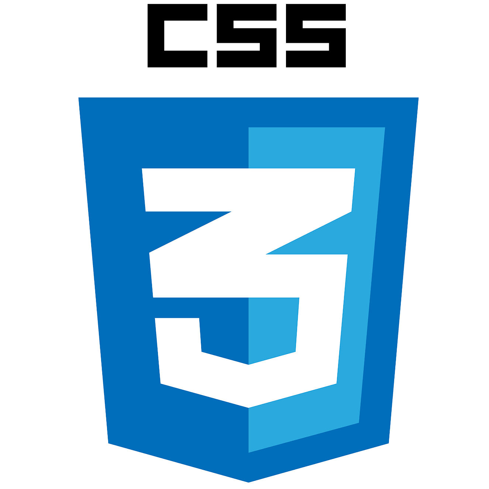
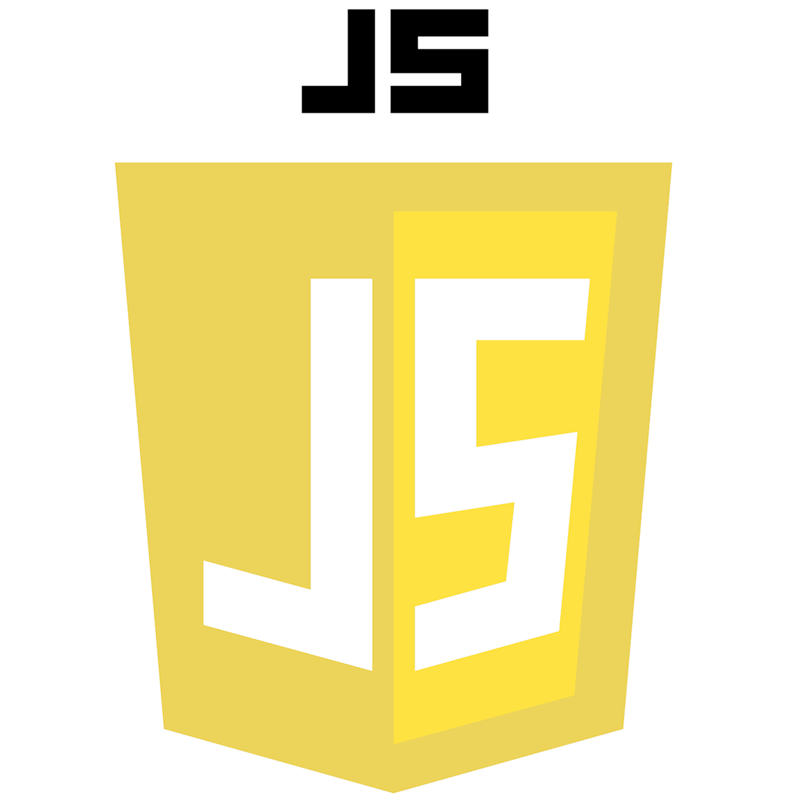
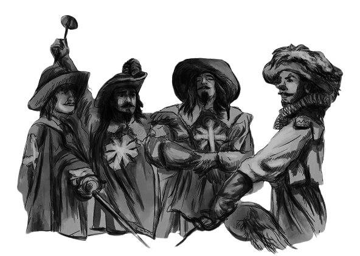

Esta aplicação web foi desenvolvida como atividade prática para a disciplina de DevOps e Integração Contínua do Centro Universitário Internacional UNINTER.
O projeto simula a atuação de uma consultoria de DevOps contratada para reestruturar os processos de desenvolvimento da empresa fictícia CodeFactory Solutions. A proposta é demonstrar, na prática, como a adoção da cultura DevOps — por meio do versionamento estruturado, automação de testes e containerização — soluciona problemas de atrasos, falta de padronização e dificuldades na integração de software.
A plataforma consiste em um portal informativo construído em HTML5 e CSS3, apresentando a estrutura da equipe de consultoria, documentação técnica das etapas do fluxo DevOps e métricas do ambiente de desenvolvimento.
HTML ;
CSS

;
.